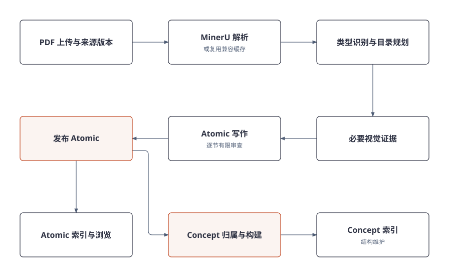
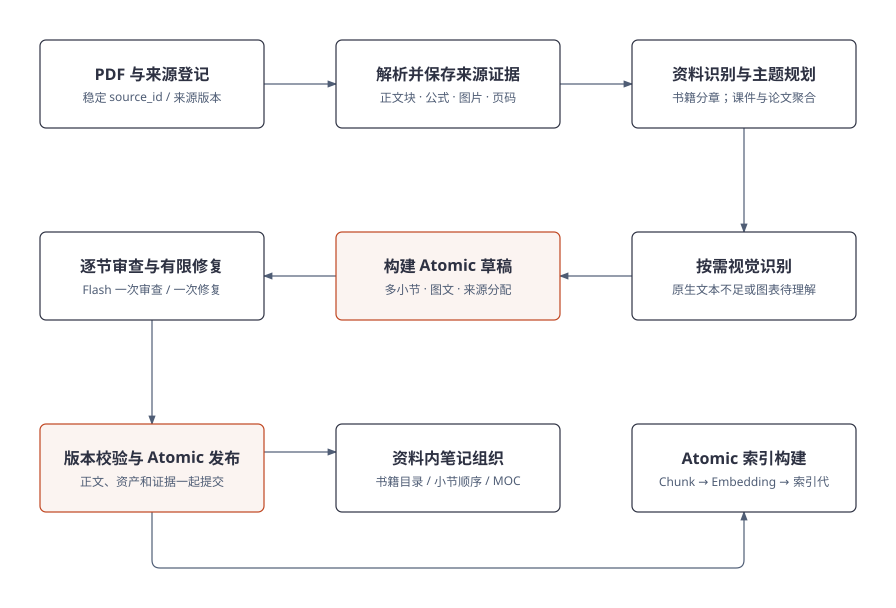
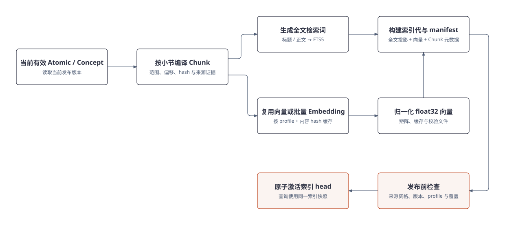
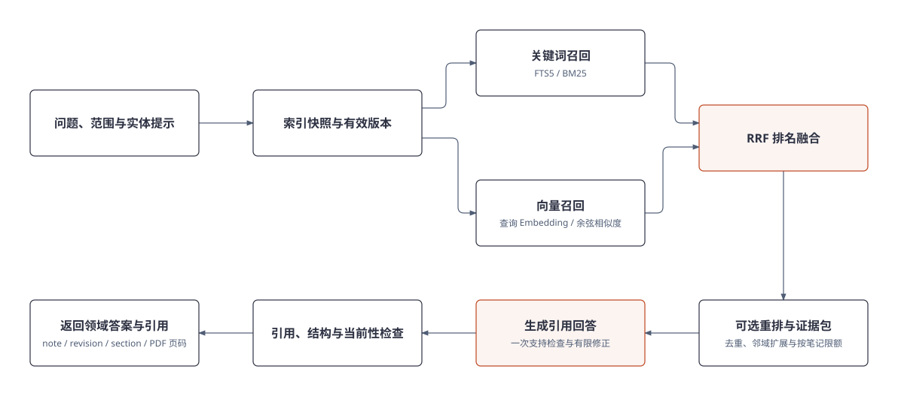

Atomic
一份资料内
的完整主题
标题、摘要与多个小节
公式图片与来源证据
可溯源的个人知识管理
基于 DeepSeek Harness，
让多文档知识持续演化，支持可靠问答。
资料在增加
从单次查找，走向长期积累。
同一主题散落在教材、课件和论文中。
重复背景、导航与实质内容混在一起。
跨页公式、图表难以直接整理和复习。
分辨重复支持、内容增量与条件差异。

Atomic 发布后即可阅读，索引和 Concept 维护分别推进。
新资料进入贡献链，版本变化沿依赖传播。
一份资料内
的完整主题
标题、摘要与多个小节
公式图片与来源证据
跨资料维护
的知识对象
对象身份、内部主题
内容贡献、支持与关系
已发布正文
中的检索范围
笔记与修订、小节与偏移
文本 hash、证据与资产

教材按可信目录分批；课件聚合连续主题；论文围绕方法与实验。
正文、引用和资产一起检查。阅读组织与索引分别派生。
主规划
排除项规划审查
标题组织
明确主题、局部证据、结构化输出
检查实际来源，修复后不循环语义复审
视觉按需调用，格式恢复最多一次 Pro
有限审查控制成本与可用性；审查不可用保留警告，事实质量仍需独立评测。
摘要说明主题、范围和阅读目标。
主题可以跨页，保留定义、条件和推导的连续性。
目录项不必对应一篇 Atomic，导航与正文身份分开。
索引、Concept 和结构维护继续在后台推进。

冻结 Atomic 版本，构造有界候选，判断复用、新建或待解决。
按贡献和输入签名更新受影响主题，发布后触发索引与结构维护。
更新受影响主题，例如补齐缺失推导。
尽量复用正文，例如另一份资料重复解释定义。
增加深入阅读关联
辅助判断，不进入核心
保存条件差异和争议
文字与图片独立判断贡献；新来源不会仅因时间更新就覆盖旧来源。
提供稳定的知识框架
重复支持或补充内容
补充方法及其适用条件
身份保持稳定
正文按有效贡献维护
每项支持保留来源版本
对象身份、内部主题、阅读路径与语义关系分别维护；一个对象可以拥有多个体系入口。

Web 助手和 Harness 共用原生 Agent Loop 与领域工具。
版本、证据、检索、任务和发布条件统一由领域服务维护。
模型调用与 Agent Loop
会话历史、工具分派
写操作审批
上下文压缩与输出裁剪
PDF → Atomic → Concept Workflow
身份、版本、贡献和证据
混合检索与引用定位
Worker、租约、幂等与阶段恢复
会话运行时管理对话过程；领域服务维护知识状态与发布规则。
领域工具
引用问答、全文与向量搜索
读取 Atomic 与 Concept
对象、资料与目录
关系与知识体系入口
知识就绪、来源进度
任务列表与详情
修订小节、刷新结构
暂停任务、恢复任务
统一 TypeScript HTTP Provider；参数、版本约束和结构化状态构成工具契约。
审批之后仍检查版本，防止旧结果覆盖新状态。
DSH 保存与压缩对话，控制上下文长度。
按需读取；上下文压力下裁剪较大的工具输出。
身份、修订、贡献、证据和索引由领域存储管理。
对话压缩不会删除知识；工具输出的裁剪也不改变领域存储中的正文和证据。

同一份可追踪 Chunk，分别支持词项召回和语义召回。
Embedding profile 必须匹配；发布、修订和撤回驱动索引维护。

按就绪状态和来源范围选择全文与向量召回。
融合去重、组织证据，再生成可返回笔记与 PDF 的引用。
关联命中片段
和笔记定位信息
note_id / revision_id
section_id / 正文偏移
PDF 原件 hash
证据页码与资产
打开对应版本
核对原文与条件
引用存在仍需核对证据是否支持陈述，尤其是公式条件和跨来源归纳。

旧笔记和旧 Chunk 退出当前问答资格。
重算贡献、维护 Concept 和索引；历史文件与缓存可按策略保留。
事件与任务进入 SQLite
HTTP 请求可以先返回
Worker 领取并续租
提交核对租约与代次
重复事件安全处理
签名不变避免重复发布
检查产物与 profile
从可信检查点继续
恢复沿用冻结的任务 profile；检查点存在仍需校验。
受控并发、兼容缓存
签名不变跳过维护
关键规划用 Pro
常规写作与审查用 Flash
只带相关证据和上下文
限制候选、结构与修复次数
灰色为历史对照，橙色为优化后。固定四份 PDF 样本；
不等同于通用降幅、费用降幅或当前质量 A/B 结论。
覆盖与遗漏
公式、条件和图像证据
引用的实际支持程度
对象身份与内部变体
使用关系和对象边界
重复支持、冲突、作者修订
转写与时间戳
关键帧与说话片段
接入 Atomic / Concept 链路
| 类别 | 工具 | 用途 |
|---|---|---|
| 问答 / 检索 | answer · search · get_readiness | 引用回答、召回、就绪状态 |
| 读取笔记 | get_atomic · get_concept | 正文与目标对象 |
| 知识浏览 | list_concepts · list_knowledge get_relations · list_knowledge_roots | 对象、目录、关系与体系 |
| 来源 / 任务 | list_sources · get_source_status list_tasks · get_task | 来源状态、任务列表与详情 |
共 13 个只读工具，统一通过 HTTP Provider 调用 Python 领域接口。
| 工具 | 动作 | 边界 |
|---|---|---|
| edit_section | 修订指定小节 | 明确笔记、小节、当前版本与修改范围 |
| refresh_knowledge_map | 请求知识结构维护 | 提交维护任务，由领域规则校验更新 |
| pause_task | 暂停指定任务 | 以持久任务状态为准 |
| resume_task | 恢复指定任务 | 校验可恢复状态与冻结 profile |
审批通过后仍执行领域校验；任务提交成功不等于后台维护已经完成。
正文、公式和资产可供阅读。
可阅读当前有效修订进入检索范围。
可检索跨来源贡献与结构维护完成。
可浏览更新结构笔记发布后即可阅读；索引和 Concept 维护可以继续推进。
PDF → Atomic → Concept
版本、贡献与证据维护
DSH 原生循环与 17 工具
混合检索和来源定位
持久任务与阶段恢复
覆盖与事实准确性
对象边界、冲突合并
异常恢复和发布一致性
引用支持和 UI 交互
音频转写与片段证据
视频关键帧与时间戳
多模态笔记识别
依据 2026-10-29 项目介绍、源码与已有验收记录；本轮优化并检查 HTML 演示，未重新执行模型生成评测。